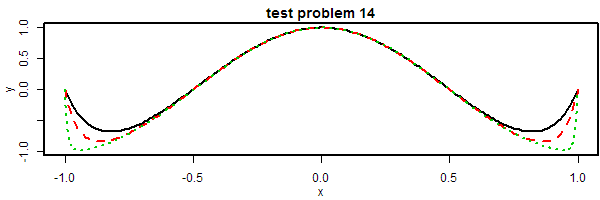

|
 |
bvpSolve - Boundary Value Problems of Differential Equations in R
'bvpSolve' is an add-on package for the open source data analysis
system R for the numerical
treatment of boundary value problems of systems of differential
equations
What is in bvpSolve?
bvpSolve contains functions that solve boundary value problems of a
system of ordinary differential equations (ODE). The
functions provide an interface to the FORTRAN functions twpbwp, twpbvpC,
acdc, colsys, colnew and colmod
Project web pages
Documentation
Manual and Tutorials
Papers
Soetaert, K. Petzoldt, T. & Setzer, R. W. (2010): Solving
differential equations in R. The R Journal (vol 2/2) p 5-15.
Conference Talks
-
Soetaert, K., Meysman, F. and Petzoldt, T. (2010) Solving Differential
Equations in R. ICNAAM 2010: International Conference of Numerical
Analysis and Applied Mathematics, September 19-25, Rhodos, Greece.
2010; doi:10.1063/1.3498463
Developers
-
Karline
Soetaert, Netherlands Institute of Ecology (NIOO), the Netherlands
-
Jeff Cash,
Department of Mathematics, Imperial College, London
-
Francesca Mazzia, Dipartimento di Matematica, Universita' di Bari, Italy
Related Packages
-
deSolve:
Functions that solve initial value problems (IVP) of systems of
ordinary differential equations.
-
rootSolve:
Nonlinear root finding, equilibrium and steady-state analysis of
ordinary differential equations.
-
ReacTran: Routines
for developing models that describe reaction and advective-diffusive
transport in one, two or three dimensions.
-
marelac:
Tools, constants and conversions for marine and lacustrine sciences.
-
simecol: An
object oriented framework for structured implementation of dynamic
models.
-
FME: Flexible
Modelling Environment: sensitivity analysis, parameter fitting and
MCMC.
Date: 2015-04-22